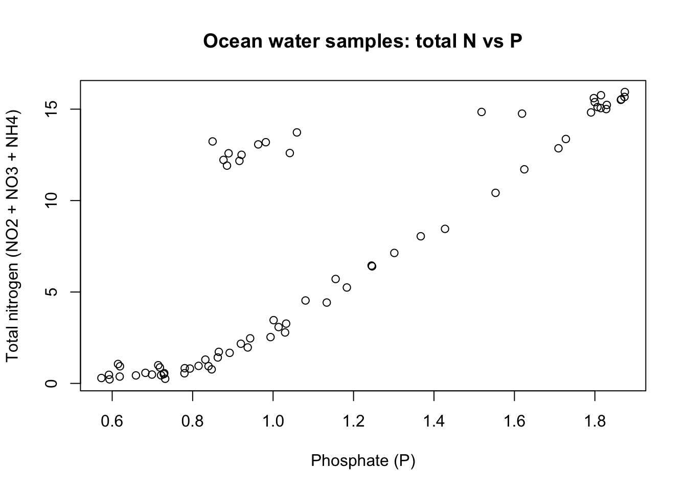

library(here)
library(readr)Literate Analysis with Ocean Water Samples
coreR Session 05 — Section 5.7 Practice
Introduction
This Quarto document follows the Section 5.7 practice exercise from coreR Session 05 (Literate Analysis with Quarto): building a simple prose + code analysis using real seawater chemistry data (BGchem2008data.csv).
Source: https://learning.nceas.ucsb.edu/2024-10-coreR/session_05.html
About the data
The seawater chemistry dataset used here is BGchem2008data.csv (downloaded previously in the course).
- Date downloaded: August 8, 2025
- Download source: https://arcticdata.io/metacat/d1/mn/v2/object/urn%3Auuid%3A35ad7624-b159-4e29-a700-0c0770419941
You will explore the nitrogen to phosphate ratio, which indicates the health of the ocean ecosystem. https://beal-agulhas.earth.miami.edu/teaching/courses/lecture-five/index.html
Setup
Best practice: put all library() calls in one chunk near the top so collaborators can see what packages are required.
Read in the data
Quarto runs R in the same way as a script: objects only exist after the chunks that create them have been run.
Using here() is a convenient way to build paths relative to your project root (e.g., your .qmd might live in scripts/ while data lives in data/).
bg_chem <- read_csv(here::here("data","raw", "BGchem2008data.csv"))(Optional) Quick peek at the data:
# Uncomment if you want more inspection output
names(bg_chem) [1] "Date" "Time" "Station" "Latitude"
[5] "Longitude" "Target_Depth" "CTD_Depth" "CTD_Salinity"
[9] "CTD_Temperature" "Bottle_Salinity" "d18O" "Ba"
[13] "Si" "NO3" "NO2" "NH4"
[17] "P" "TA" "O2" # str(bg_chem)
# head(bg_chem)
# summary(bg_chem)Analysis
As the “analysis”, we’ll calculate a few simple summary statistics and examine how the nitrogen:phosphate values compare to the Redfield ratio concept.
Calculate summary statistics
Compute mean nutrient values (using na.rm = TRUE so missing values don’t break the calculation).
nitrate <- mean(bg_chem$NO3, na.rm = TRUE)
nitrite <- mean(bg_chem$NO2, na.rm = TRUE)
amm <- mean(bg_chem$NH4, na.rm = TRUE)
phos <- mean(bg_chem$P, na.rm = TRUE)Calculate mean Redfield ratio
ratio <- (nitrate + nitrite + amm) / phos
ratio[1] 6.216519You can report results inline in Quarto like this:
The Redfield ratio for this dataset is approximately: 6
Plot Redfield ratio measurements
Finally, create a simple base R plot that shows the relationship between phosphate and the total nitrogen components.
plot(
bg_chem$P,
bg_chem$NO2 + bg_chem$NO3 + bg_chem$NH4,
xlab = "Phosphate (P)",
ylab = "Total nitrogen (NO2 + NO3 + NH4)",
main = "Ocean water samples: total N vs P"
)
Conclusion
In this mini-analysis, we:
- Loaded packages in a dedicated setup chunk
- Read in
BGchem2008data.csvusing a project-root-relative path (here()) - Calculated simple nutrient means
- Computed a mean nitrogen:phosphate ratio
- Created a basic plot relating total nitrogen to phosphate
This is the core idea of literate analysis: combine narrative and code in one document so the workflow is easier to understand and reproduce.